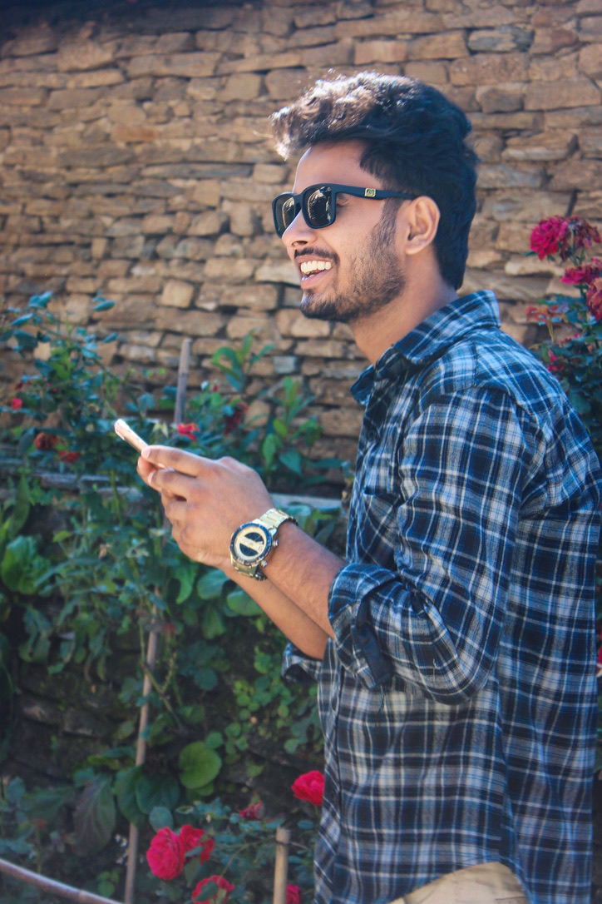

Hey There!
I'm Nischal Bhandari
A designer specializing in art and designing consciously considering sustainable living. I am from Birtamode, Jhapa and currently pursuing a Bachelor of Computer Application (BCA) from Mechi Multiple Campus. I am always keen to learn new things whenever I get a chance. I am interested in Sketching, Illustrating, Website Designing, Photography, Coding, Graphic Designing, Poem writing and love working and experimenting with colors, textures, and forms. I maintain a healthy balance between functionality and visual impact in all my work.
I believe art is within all of us. The way we express our creativity shall have no boundaries because when it's fueled by our true passions and beliefs, it will lead to great results. Nowadays, I spend most of my free time researching design technologies. One of my dreams is to master all the design technologies.